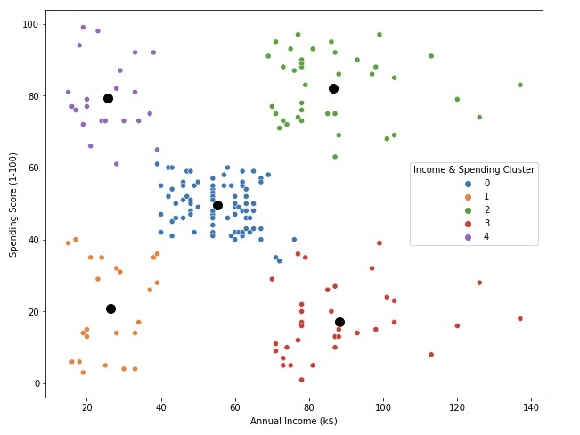
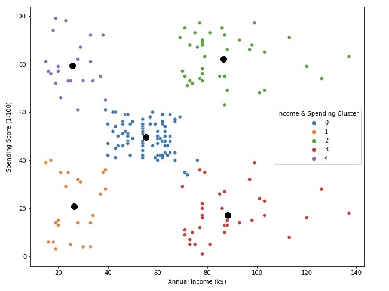
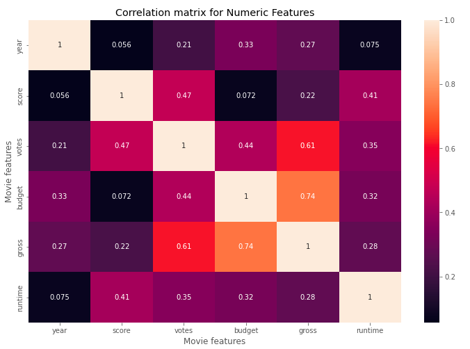

About me
 Hi, my name is Trân and I work as a data analyst/social researcher.
I have a Master's degree in Economics and Development (Ghent Univeristy).
I have experience working with questionnaire design, data collection, preparation, exploration, analysis, and visualization.
This page showcases some of my projects using Python, R, SQL, and Tableau.
Do you want to work together? Please reach out to me via email.

Hi, my name is Trân and I work as a data analyst/social researcher.
I have a Master's degree in Economics and Development (Ghent Univeristy).
I have experience working with questionnaire design, data collection, preparation, exploration, analysis, and visualization.
This page showcases some of my projects using Python, R, SQL, and Tableau.
Do you want to work together? Please reach out to me via email.

This project uses dataset from a retail store to identify customer groups for marketing strategy planning. Below is the specific objectives:
- Identify and visualize customer profiles in general, and by gender
- Use k-mean cluster analysis to divide customers groups and depict profiles based on demographic information
- Suggest business/marketing strategies
Keywords: Pandas, Seaborn, Matplotlib, KMean, Machine Learning

Is the movie industry dying? Is Netflix the new entertainment king?
This project used Python to assess movie revenue over the last decade.
Results show that the number of votes and movie budget have correlations with gross revenue.
Keywords: Pandas, NumPy, Seaborn, Matplotlib
Datasets of deaths by COVID-19 and vaccination were joined by using SQL. The following issues were answered:
- Possibility of dying if getting Covid in Belgium
- Percentage of population infected with Covid (in Belgium)
- Highest Infection Rate compared to Population
- ...
Keywords: Joins, CTE's, Windows Functions, Aggregate Functions, Converting Data Types
Data scraping isn't something only for programmer or software engineer; we, analysts, can do it too using BeautifulSoup and Requests libraries.
This project is a case study scraping data of an interesting book from Amazon.

Italy is one of the most alternative locations for
migrants as well as the entry gate to reach other European countries. In this project, I examined determinants of international migration in this country.
Testimonials
Tran has been a quick learner, team worker, always eager to
undertake new tasks, managed her time very well and produced required results with minimum guidance.
- Supervisor, Food and Agriculture Organization of the United Nations
As the mentor of her graduation thesis, I observed her excellent
performances as well as significant progress. Among many virtues, I was impressed by
her critical thinking, dedication, and cooperation capability. With these characters, I
believe in her success both in an academic job and an industrial company.
- Thesis Supervisor, Can Tho University